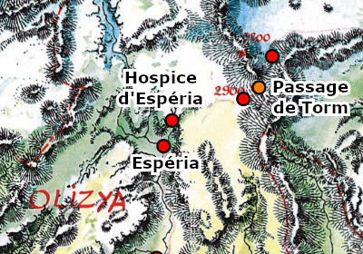

L'hospice d'Espéria
La Main de Saris est une organisation bienfaitrice qui prodigue gratuitement des soins aux nécessiteux de la région des Deux Lacs, et en particulier à tous les pèlerins qui entreprennent le chemin vers la cité sainte de Laelith. L'immense majorité de ses membres sont des clercs et des prêtres d'alignement bon. La devise de la Main de Saris est « Il n'y a pas de plus pure gentillesse que le contact de la main d'un guérisseur ».
L'ordre possède plusieurs hospices de par le royaume des Deux Lacs. Historiquement le premier et le plus connu est l’hôpital de Laelith, situé au premier étage du Lazaret, mais chacun des quatre temples administrant maintenant son pavillon, l'ordre n'est plus que le propriétaire des murs et le bienfaiteur. Le deuxième hospice se situe au fort du Reflet Béni, sur la route du Couchant, aux portes du désert. Le troisième est l'hospice d'Espéria, en Olizya, et un nouvel hospice est en construction à Azil.
Organisation de l'hospice
Frère Adalberon
Au sein de l'ordre, le responsable d'un hospice est un administrateur, fonction qui reporte hiérarchiquement au conservateur de l'ordre à Laelith, actuellement la demi-elfe Kalya Fog. Le responsable de l'hospice d'Espéria est le père Adalbéron, un homme âgé de 50 ans qui en est administrateur depuis plus de vingt ans, tâche qu'il assume toujours avec dévouement. Il a toutefois à plusieurs reprises sollicité de prendre le commandement de l'hospice du fort du Reflet Béni, plus important car jumelé avec un chapitre du Gant de Saris, ou bien d'être nommé superviseur au Lazaret de Laelith, un lieu beaucoup plus civilisé que toutes ces montagnes qui entourent l'hospice, mais cela lui a à chaque fois été refusé. C'est un homme d'une grande culture qui aime parler avec tous les visiteurs de passage, quelles que soient leurs origines, leurs croyances ou leur niveau social.
Frère Ignacius
Les autres prêtres ou clercs sont appelés des chapelains. La plupart vivent ici, mais certains, des clercs principalement, ne viennent que pour réaliser leur mois de service annuel en tant que membre de l'ordre de la Main de Saris. L'hospice d'Espéria compte huit chapelains à demeure, donc l'apothicaire et le bibliothécaire. Frère Ignacius, athlétique, est un clerc combattant. C'est lui qui s'occupe de l'entraînement physique de la communauté, car « un esprit saint vit mieux dans un corps sain ». Fort comme un taureau, Ignacius a perdu un œil dans… une taverne. Car avant d'embrasser les ordres, Guillaume était un aventurier écumant le royaume à la recherche d'or. Il a tué, il a pillé… Et puis un jour, laissé pour mort sous un soleil de plomb après un combat contre des gnolls dans le désert, il a été sauvé par des prêtres d'Ilmater. Sa vie a alors complètement changé, mais confronté depuis à une multitude d'horreurs pour servir son nouveau dieu, il a développé au fil des ans une certaine forme de cynisme.
Karaia
Les chapelains sont aidés dans les tâches quotidiennes par des frères servants, des acolytes qui officient comme assistants pour les soins, et par des roturiers, qui sont employés pour le fonctionnement de l'enceinte. On en compte ici au total entre 25 et 30 suivant les saisons. Frère Horace est un acolyte un peu simple d'esprit de 24 ans qui s'occupe des patients légers au premier étage de l'hospice. Orphelin à cinq ans, il a été recueilli par l'administrateur et n'a depuis jamais quitté Espéria. Il est devenu avec le temps un petit expert en plante et le meilleur assistant du chapelain apothicaire. Karaïa et son mari Ascelin sont eux les employés responsables de l'hostellerie et de l'écurie. Anciens aubergistes à Souleÿna, des revers de chance ont fini par les amener ici il y a déjà 12 ans. Ils aimeraient bien faire de l'hostellerie une vraie auberge rentable avec des menus plus élaborés, mais l'ordre, le propriétaire, tient à l'image d'austérité que donne l'hospice.
L'hospice d'Espéria
Plan de l'hospice d'Espéria
La raison d'être de l'hospice d'Espéria est le passage de Torm, un col à 2900 mètres d'altitude sur la route Nord des pèlerins. Son franchissement peut être une épreuve très physique pour certains alors l'hospice est là pour accueillir ceux blessés, malades, épuisés ou simplement affamés par le voyage. L'enceinte de l'hospice n'est d'ailleurs pas dans Espéria mais un peu plus au nord, à une heure de marche, aux pieds des montagnes.
Les soins sont donc l'activité principale de l'hospice, mais pas la seule, et cela pour diverses raisons. Tout d'abord, l'hospice étant géré par des prêtres, le divin y a une place prédominante et le centre du domaine est sans surprise un temple. Ensuite, l'hospice accueillant des personnes de tout horizon, il se doit d'être autonome et de ne pas dépendre du pouvoir politique de la région. C'est pourquoi l'hospice possède plusieurs bâtiments qui abritent divers animaux et même une forge. Enfin, de par sa situation éloignée des villes, l'hospice attrait de nombreux sages comme des copistes ou des personnes désireuses de pouvoir méditer sereinement. C'est la raison d'être d'une bibliothèque à l'hospice d'Espéria.
1. Poste de garde. Ce bâtiment abrite les gardes de l'hospice, 4 moines d'Ilmater plus très jeunes. Leur rôle est de surveiller les entrées.
2. Chapelle. Tous les pèlerins sont invités à remercier Ilmater dans le temple de l'hospice, mais pour les clercs de passage voués à une autre divinité, l'hospice propose cette petite chapelle anonyme où tous les dieux peuvent être vénérés.
4. Moulin. C'est dans les deux moulins manuels de cet édifice qu'est moulue, chaque jour, la farine nécessaire à la confection du pain.
5. Four à pain. Le four est une sorte de gros dôme en briques.
6. Bains. Cette pièce unique contient deux grandes cuves individuelles en bois, un grand chaudron et une cheminée pour l'eau chaude.
7. Maison des employés. Une salle commune et plusieurs chambres exiguës. Les employés de l'hospice (le forgeron, la fromagère, les cuisiniers, etc) dorment ici, mais ils mangent aux cuisines.
8. Forge. Ce bâtiment contient tout le matériel habituel : brasier, soufflet géant, cuves, enclumes, outils, etc. Le forgeron y fabrique avant tout des outils et quelques armes. Il est aussi habile pour réparer les véhicules endommagés.
10. Poulailler. Poules, oies et canards passent leur journée dans la cour et on les enferme ici au crépuscule.
11. Porcherie. Comme pour les poules, les cochons sont généralement laissés en liberté dans l'enceinte toute la journée.
12. Fromagerie. Dans ce bâtiment sans fenêtre sont préparés les fromages, à partir du lait fourni par le bétail de l'hospice.
13. Étable et bergerie. Une famille de paysans vivant à proximité de l'hospice sort chaque matin le bétail par la petite porte du mur d'enceinte et le ramène le soir. Les bêtes (vaches, moutons et chèvres) servent à l'alimentation (lait et viande) et à l'habillement (laine et cuir).
14. Hospice. Bâti sur trois étages, c'est le plus grand et le plus haut bâtiment de l'enceinte. C'est ici que les prêtres et les clercs, assistés par des acolytes, pratiquent gratuitement la médecine. La plupart des patients de l'hospice sont des pèlerins. Tout le rez-de-chaussée est occupé par un grand dortoir commun rempli de lits pour accueillir les cas les plus graves, qui nécessitent des soins magiques, que cela soit pour blessure ou maladie. Au premier étage la grande salle ne propose que des paillasses. C'est là qu'on installe les cas plus légers, blessures légères, déshydratation ou simple grosse fatigue, qui seront soignés uniquement à base de plantes, d'onguents et de soins classiques. Au dernier étage on trouve des chambres privées, pour les patients qui doivent être isolés pour des questions de maladies contagieuses ou pour ceux qui sont prêts à payer pour être seul.
15. Cellules des lycanthropes. Avec le temps, l'hospice d'Espéria s'est forgé une excellente réputation en ce qui concerne certaines maladies graves comme la lycanthropie. Ce quartier permet d'isoler les cas dangereux dans deux cellules spéciales.
16. Apothicaire. Dans cette pièce réservée au chapelain apothicaire sont préparées et entreposées les potions et autres préparations curatives ou médicinales. Toutes les plantes utilisées sont cueillies dans la montagne avoisinante. Les portes en sont fermées par une imposante serrure (DD 20) car certains produits ne devraient pas tomber dans les mains de n'importe qui...
17. Réserve. C'est ici qu'est entreposée la nourriture qui se conserve : viande salée, légumes et fruits secs, etc. On y trouve aussi quelques armes, de la laine et de la farine.
18. Écuries. Elles sont occupées par les quelques chevaux et mules qu'utilisent parfois les chapelains et les employés pour leurs déplacements. Les rares visiteurs qui possèdent une monture peuvent bien entendu les laisser ici également.
20. Hostellerie. Les visiteurs en bonne santé mais qui se sont fait surprendre par la nuit ou une tempête peuvent passer la nuit dans cette vieille maison dont les fenêtres du premier étage, munies de barreaux, donnent sur la campagne environnante. Le rez-de-chaussée est presque entièrement occupé par la salle commune où sont servis de modestes repas, l'étage étant réservé aux chambres dont le confort est des plus rustiques : une paillasse, une table et tabouret de bois, c'est tout. Si les soins et l'hébergement des malades sont gratuits, l'hostellerie ne l'est pas, mais les prix sont tout à fait abordables. La nuit coûte 1 pa et inclut le petit déjeuner, et chaque repas coûte également 1 pa. Notez qu'il n'est pas permis d'y passer plus d'une nuit, à moins d'être malade et donc d'être installé à l'hospice.
21. Maison de l'ordre. C'est ici que sont logés les hôtes de marque, membres de l'ordre de Saris ou personnalités importantes du royaume. La salle à manger du rez-de-chaussée et les chambres de l'étage sont toutefois d'un luxe relatif.
22. Temple. Ce temple a été bâti du temps de la déesse Saris et en son honneur. À la mort de la divinité, ce sont les fidèles du dieu Torm qui ont repris l'ordre en main, bien plus attirés par le Gant de Saris que par la Main de Saris. Depuis une ambiguïté règne au sein de l'ordre, car si toutes les bonnes volontés sont acceptées et qu'officiellement l'ordre n'est pas lié à une foi particulière, il est indéniable que le Gant de Saris est contrôlé par des fidèles de Torm (domaine de la guerre) et que la Main de Saris l'est par ceux du dieu Ilmater (domaine de la vie). Le temple de l'hospice ne possède donc volontairement qu'une énorme statue de la défunte déesse Saris, mais on y trouve tout de même de multiples références à peine cachées au dieu de l'endurance. Mis à part cela, le décor est des plus classiques : bancs, autel, reliquaire, etc. Des offices y sont célébrés... par des prêtres d'Ilmater... toutes les trois heures. Rappelons en effet ici que les adeptes d'Ilmater doivent prier au moins six fois dans la journée.
23. Quartier de l'administrateur. Ces quartiers comprennent la chambre et le bureau de l'administrateur. Le mobilier est simple, le luxe n'est pas de mise ici. Le meuble le plus remarquable est un énorme lutrin de bronze pour l'étude de la théologie et la lecture des textes sacrés. L'administrateur préside chaque jours en personne les deux plus grands offices, celui de prime à l'aurore et celui de complies au coucher du soleil, face aux pèlerins.
24. Réfectoire. Ce grand réfectoire est réservé aux chapelains et aux frères servants. Les employés mangent dans la cuisine, les pèlerins de passages à l'hostellerie et les malades à l'hospice.
26. Dortoir des chapelains. Les chapelains dorment dans des cellules individuelles, au rez-de-chaussée et à l'étage, sur des lits relativement confortables. Ils ont droit chacun à une armoire et à un bureau.
27. Dortoir des frères servants. Les frères servants dorment également dans des cellules individuelles au rez-de-chaussée et l'étage mais leur taille est plus petite que celle des chapelains et le mobilier moindre.
28. Bibliothèque. Dans cette salle on copie, on restaure et on conserve des ouvrages traitant des religions et d'histoire. Le chapelain bibliothécaire est le gardien des parchemins de sorts divins qui sont entreposés dans un bureau secret de la bibliothèque.
29. Cloître. Le sol de l'ensemble du domaine étant en terre battue, le cloître est le seul endroit de verdure à l'intérieur de l'enceinte. C'est un joli jardin orné d'une belle fontaine où tout le monde est invité à venir méditer un moment.
Par blueace, basé sur une aide de jeu de C.Rayer et J.Dalstein